Quick Introduction of Batch Normalization¶
约 5807 个字 预计阅读时间 19 分钟
本篇是一个很快地介绍，Batch Normalization 这个技术
Changing Landscape¶
之前才讲过说，我们能不能够直接改error surface 的 landscape，我们觉得说 error surface 如果很崎岖的时候，它比较难 train，那我们能不能够直接把山铲平，让它变得比较好 train 呢？
Batch Normalization 就是其中一个，把山铲平的想法
我们一开始就跟大家讲说，不要小看 optimization 这个问题，有时候就算你的 error surface 是 convex 的，也就是说它就是一个碗的形状，都不见得很好 train
假设你的两个参数啊，它们对 Loss 的斜率差别非常大，在 \(w_1\) 这个方向上面，你的斜率变化很小，在 \(w_2\) 这个方向上面斜率变化很大
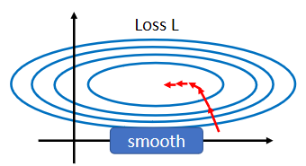
如果是固定的 learning rate，你可能很难得到好的结果，所以我们才说你需要adaptive 的 learning rate、 Adam 等等比较进阶的 optimization 的方法，才能够得到好的结果
现在我们要从另外一个方向想，直接把难做的 error surface 把它改掉，看能不能够改得好做一点
在做这件事之前，也许我们第一个要问的问题就是，有这一种状况，$w_1 $ 跟 \(w_2\) 它们的斜率差很多的这种状况，到底是从什么地方来的
假设我现在有一个非常非常非常简单的 model，它的输入是 \(x_1\) 跟 \(x_2\)，它对应的参数就是 $ w_1 $ 跟 \(w_2\)，它是一个 linear 的 model，没有 activation function
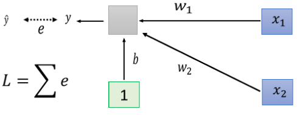
$ w_1 $ 乘 \(x_1\)，\(w_2\) 乘 \(x_2\) 加上 b 以后就得到 y，然后会计算 y 跟 \(\hat{y}\) 之间的差距当做 e，把所有 training data e 加起来就是你的 Loss，然后去 minimize 你的 Loss
那什么样的状况我们会产生像上面这样子，比较不好 train 的 error surface 呢？
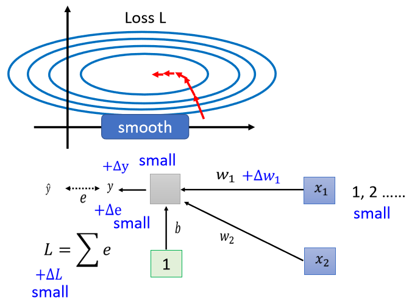
当我们对 $ w_1 $ 有一个小小的改变，比如说加上 delta $ w_1 $ 的时候，那这个 L 也会有一个改变，那这个 $ w_1 $ 呢，是透过 $ w_1 $ 改变的时候，你就改变了 y，y 改变的时候你就改变了 e，然后接下来就改变了 L
那什么时候 $ w_1 $ 的改变会对 L 的影响很小呢，也就是它在 error surface 上的斜率会很小呢
一个可能性是当你的 input 很小的时候，假设 \(x_1\) 的值在不同的 training example 里面，它的值都很小，那因为 \(x_1\) 是直接乘上 $ w_1 \(，如果 \(x_1\) 的值都很小，\) w_1 $ 有一个变化的时候，它得到的，它对 y 的影响也是小的，对 e 的影响也是小的，它对 L 的影响就会是小的
反之呢，如果今天是 \(x_2\) 的话
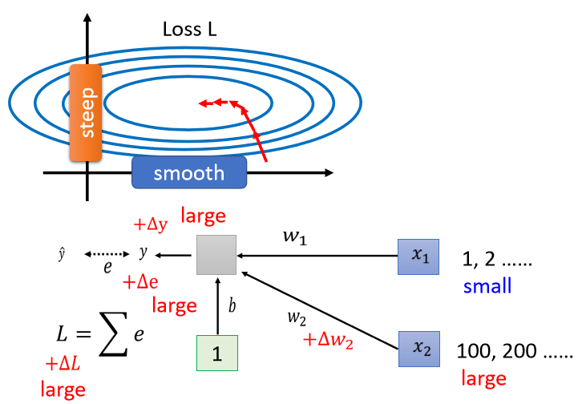
那假设 \(x_2\) 的值都很大，当你的 \(w_2\) 有一个小小的变化的时候，虽然 \(w_2\) 这个变化可能很小，但是因为它乘上了 \(x_2\)，\(x_2\) 的值很大，那 y 的变化就很大，那 e 的变化就很大，那 L 的变化就会很大，就会导致我们在 w 这个方向上，做变化的时候，我们把 w 改变一点点，那我们的 error surface 就会有很大的变化
所以你发现说，既然在这个 linear 的 model 里面，当我们 input 的 feature，每一个 dimension 的值，它的 scale 差距很大的时候，我们就可能产生像这样子的 error surface，就可能产生不同方向，斜率非常不同，坡度非常不同的 error surface
所以怎么办呢，我们有没有可能给feature 里面不同的 dimension，让它有同样的数值的范围
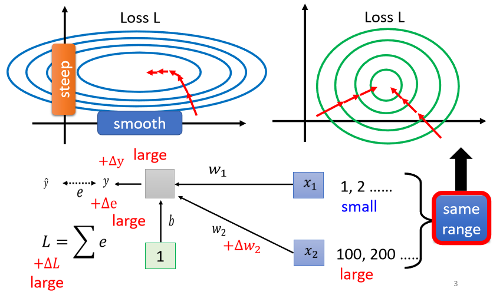
如果我们可以给不同的 dimension，同样的数值范围的话，那我们可能就可以制造比较好的 error surface，让 training 变得比较容易一点
其实有很多不同的方法，这些不同的方法，往往就合起来统称为 Feature Normalization
Feature Normalization¶
以下所讲的方法只是Feature Normalization 的一种可能性，它并不是 Feature Normalization 的全部，假设 \(x^1\) 到 \(x^R\)，是我们所有的训练资料的 feature vector
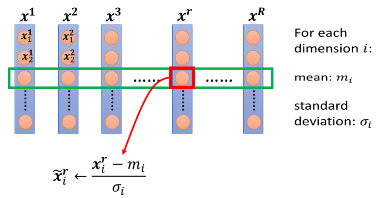
我们把所有训练资料的 feature vector ，统统都集合起来，那每一个 vector ，\(x_1\) 里面就 $x^1_1 \(代表 \(x_1\) 的第一个 element，\)x^2_1 $，就代表 \(x_2\) 的第一个 element，以此类推
那我们把不同笔资料即不同 feature vector，同一个 dimension 里面的数值，把它取出来，然后去计算某一个 dimension 的 mean，它的 mean 呢 就是\(m_i\)，我们计算第 i 个 dimension 的，standard deviation，我们用\(\sigma_i\)来表示它
那接下来我们就可以做一种 normalization，那这种 normalization 其实叫做 标准化 ，其实叫 standardization ，不过我们这边呢，就等一下都统称 normalization 就好了 $$ \tilde{x}^r_i ← \frac{x^r_i-m_i}{\sigma_i} $$ 我们就是把这边的某一个数值x，减掉这一个 dimension 算出来的 mean，再除掉这个 dimension，算出来的 standard deviation，得到新的数值叫做 \(\tilde{x}\)
然后得到新的数值以后，再把新的数值把它塞回去，以下都用这个 tilde来代表有被 normalize 后的数值
那做完 normalize 以后有什么好处呢？
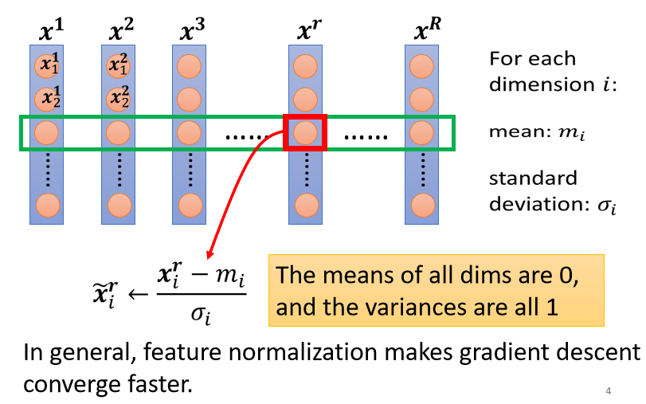
-
做完 normalize 以后啊，这个 dimension 上面的数值就会平均是 0，然后它的 variance就会是 1，所以这一排数值的分布就都会在 0 上下
-
对每一个 dimension都做一样的 normalization，就会发现所有 feature 不同 dimension 的数值都在 0 上下，那你可能就可以制造一个，比较好的 error surface
所以像这样子 Feature Normalization 的方式，往往对你的 training 有帮助，它可以让你在做 gradient descent 的时候，这个 gradient descent，它的 Loss 收敛更快一点，可以让你的 gradient descent，它的训练更顺利一点，这个是 Feature Normalization
Considering Deep Learning¶
\(\tilde{x}\) 代表 normalize 的 feature，把它丢到 deep network 里面，去做接下来的计算和训练，所以把 \(\tilde x_1\) 通过第一个 layer 得到 \(z^1\)，那你有可能通过 activation function，不管是选 Sigmoid 或者 ReLU 都可以，然后再得到 \(a^1\)，然后再通过下一层等等，那就看你有几层 network 你就做多少的运算
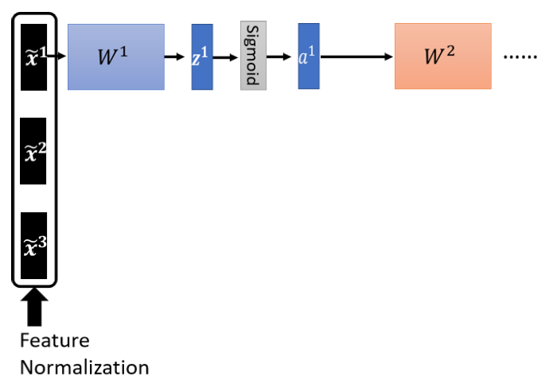
所以每一个 x 都做类似的事情，但是如果我们进一步来想的话，对 \(w_2\) 来说
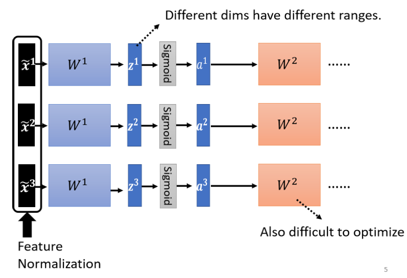
这边的 \(a^1\) \(a^3\) 这边的 \(z^1\) \(z^3\)，其实也是另外一种 input，如果这边 \(\tilde{x}\)，虽然它已经做 normalize 了，但是通过 $ w_1 $ 以后它就没有做 normalize，如果 \(\tilde{x}\) 通过 $ w_1 $ 得到是 \(z^1\)，而 \(z^1\) 不同的 dimension 间，它的数值的分布仍然有很大的差异的话，那我们要 train \(w_2\) 第二层的参数，会不会也有困难呢
对 \(w_2\) 来说，这边的 a 或这边的 z 其实也是一种 feature，我们应该要对这些 feature 也做 normalization
那如果你选择的是 Sigmoid，那可能比较推荐对 z 做 Feature Normalization，因为Sigmoid 是一个 s 的形状，那它在 0 附近斜率比较大，所以如果你对 z 做 Feature Normalization，把所有的值都挪到 0 附近，那你到时候算 gradient 的时候，算出来的值会比较大
那不过因为你不见得是用 sigmoid ，所以你也不一定要把 Feature Normalization放在 z 这个地方，如果是选别的，也许你选a也会有好的结果，也说不定，Ingeneral 而言，这个 normalization，要放在 activation function 之前，或之后都是可以的，在实作上，可能没有太大的差别，好 那我们这边呢，就是对 z 呢，做一下 Feature Normalization
那怎么对 z 做 Feature Normalization 呢
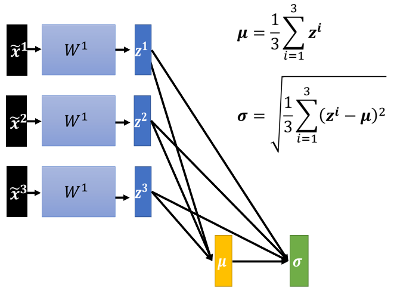
那你就把 z，想成是另外一种 feature ，我们这边有 \(z^1\) \(z^2\) \(z^3\)，我们就把 \(z^1\) \(z^2\) \(z^3\) 拿出来，从 \(z^1\) \(z^2\) \(z^3\)，算出 \(μ\) 和 \(\sigma\)
接下来就把这边的每一个 z ，都去减掉 \(μ\) 除以 \(\sigma\)，你把 \(z^i\)减掉 \(μ\)，除以 \(\sigma\)，就得到 \(\tilde z^i\)
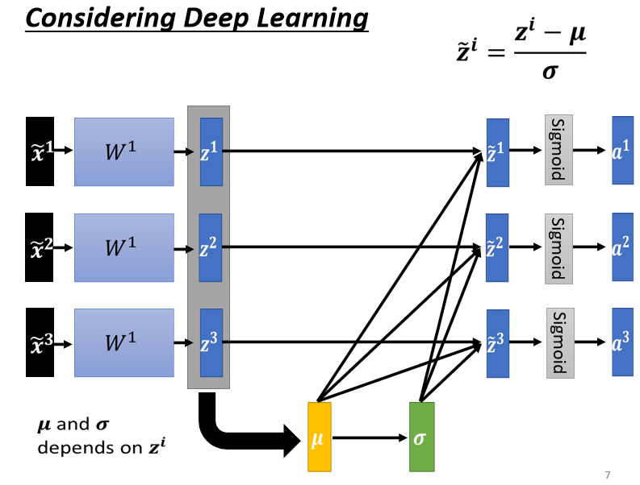
那这边的 \(μ\) 跟 \(\sigma\)，它都是向量，所以这边这个除的意思是element wise 的相除，就是 \(z^i\)减 \(μ\)，它是一个向量，所以分子的地方是一个向量，分母的地方也是一个向量，把这个两个向量，它们对应的 element 的值相除，是我这边这个除号的意思，这边得到 Z 的 tilde
接下来通过 activation function，得到其他 vector，然后再通过，再去通过其他 layer 等等，这样就可以了，这样你就等于对 \(z^1\) \(z^2\) \(z^3\)，做了 Feature Normalization，变成 \(\tilde{z}^1\) \(\tilde{z}^2\) \(\tilde{z}^3\)
在这边有一件有趣的事情，这边的 \(μ\) 跟 \(\sigma\)，它们其实都是根据 \(z^1\) \(z^2\) \(z^3\) 算出来的
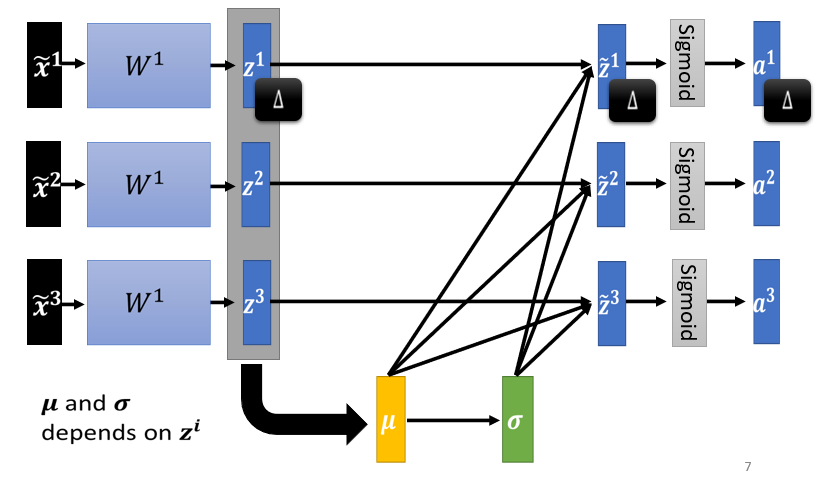
所以这边 \(z^1\) 啊，它本来，如果我们没有做 Feature Normalization 的时候，你改变了 \(z^1\) 的值，你会改变这边 a 的值，但是现在啊，当你改变 \(z^1\) 的值的时候，\(μ\) 跟 \(\sigma\) 也会跟着改变，\(μ\) 跟 \(\sigma\) 改变以后，\(z^2\) 的值 \(a^2\) 的值，\(z^3\) 的值 \(a^3\) 的值，也会跟着改变
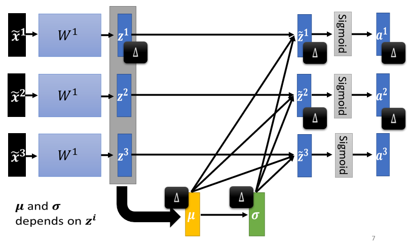
所以之前，我们每一个 \(\tilde{x}_1\) \(\tilde{x}_2\) \(\tilde{x}_3\)，它是独立分开处理的，但是我们在做 Feature Normalization 以后，这三个 example，它们变得彼此关联了
我们这边 \(z^1\) 只要有改变，接下来 \(z^2\) \(a^2\) \(z^3\) \(a^3\)，也都会跟着改变，所以这边啊，其实你要把，当你有做 Feature Normalization 的时候，你要把这一整个 process，就是有收集一堆 feature，把这堆 feature 算出 \(μ\) 跟 \(\sigma\) 这件事情，当做是 network 的一部分
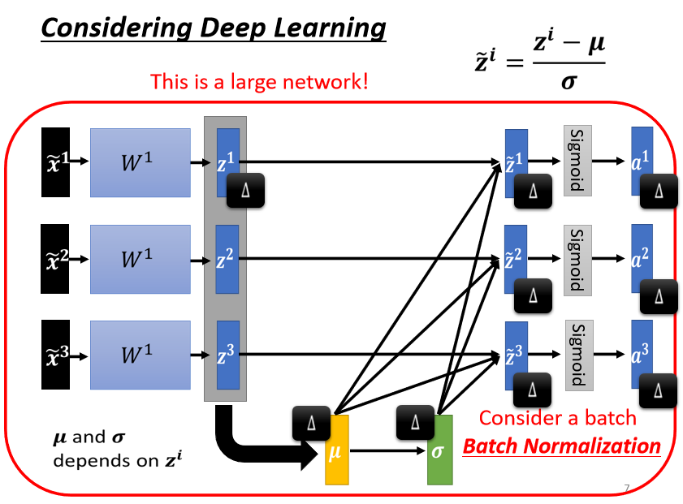
也就是说，你现在有一个比较大的 network
- 你之前的 network，都只吃一个 input，得到一个 output
- 现在你有一个比较大的 network，这个大的 network，它是吃一堆 input，用这堆 input 在这个 network 里面，要算出 \(μ\) 跟 \(\sigma\)，然后接下来产生一堆 output
那这个地方比较抽象
那这边就会有一个问题了，因为你的训练资料里面的 data 非常多，现在一个 data set，benchmark corpus 都上百万笔资料， GPU 的 memory，根本没有办法，把它整个 data set 的 data 都 load 进去。
在实作的时候，你不会让这一个 network 考虑整个 training data 里面的所有 example，你只会考虑一个 batch 里面的 example，举例来说，你 batch 设 64，那你这个巨大的 network，就是把 64 笔 data 读进去，算这 64 笔 data 的 \(μ\)，算这 64 笔 data 的 \(\sigma\)，对这 64 笔 data 都去做 normalization
因为我们在实作的时候，我们只对一个 batch 里面的 data，做 normalization，所以这招叫做 Batch Normalization
那这个 Batch Normalization，显然有一个问题 就是，你一定要有一个够大的 batch，你才算得出 \(μ\) 跟 \(\sigma\)，假设你今天，你 batch size 设 1，那你就没有什么 \(μ\) 或 \(\sigma\) 可以算
所以这个 Batch Normalization，是适用于 batch size 比较大的时候，因为 batch size 如果比较大，也许这个 batch size 里面的 data，就足以表示，整个 corpus 的分布，那这个时候你就可以，把这个本来要对整个 corpus，做 Feature Normalization 这件事情，改成只在一个 batch，做 Feature Normalization，作为 approximation，
在做 Batch Normalization 的时候，往往还会有这样的设计你算出这个 \(\tilde{z}\) 以后
- 接下来你会把这个 \(\tilde{z}\)，再乘上另外一个向量叫做 \(γ\)，所以你就是把 \(\tilde{z}\) 跟 \(γ\) 做按元素的相乘，把 z 这个向量里面的 element，跟 \(γ\) 这个向量里面的 element，两两做相乘
- 再加上 \(β\) 这个向量，得到 \(\hat{z}\)
而 \(β\) 跟 \(γ\)，你要把它想成是 network 的参数，它是另外再被learn出来的，
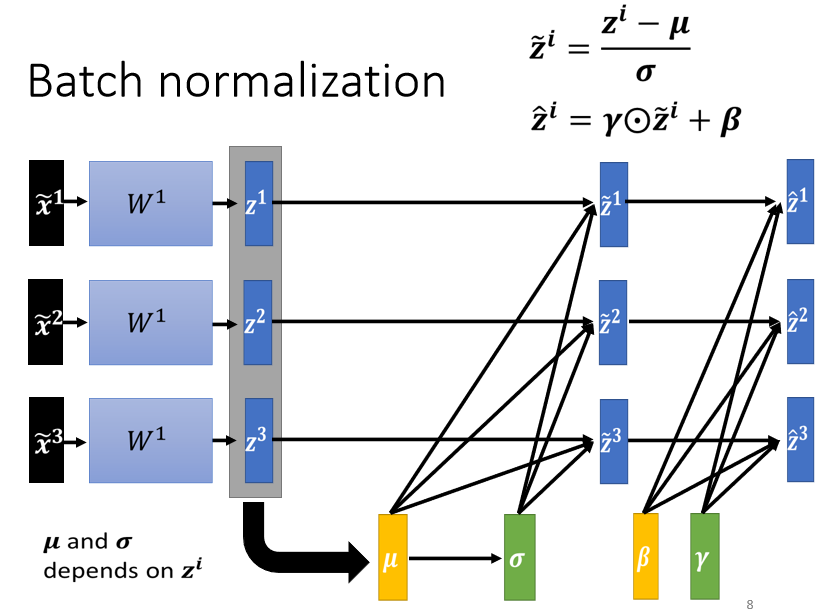
那为什么要加上 \(β\) 跟 \(γ\) 呢
有人可能会觉得说，如果我们做 normalization 以后，那这边的 \(\tilde{z}\)，它的平均就一定是 0，那也许，今天如果平均是 0 的话，就是给那 network 一些限制，那也许这个限制会带来什么负面的影响，所以我们把 \(β\) 跟 \(γ\) 加回去
然后让 network 呢，现在它的 hidden layer 的 output平均不是 0 的话，他就自己去learn这个 \(β\) 跟 \(γ\)，来调整一下输出的分布，来调整这个 \(\hat{z}\) 的分布
但讲到这边又会有人问说，刚才不是说做 Batch Normalization 就是，为了要让每一个不同的 dimension，它的 range 都是一样吗，现在如果加去乘上 \(γ\)，再加上 \(β\)，把 \(γ\) 跟 \(β\) 加进去，这样不会不同 dimension 的分布，它的 range 又都不一样了吗
有可能，但是你实际上在训练的时候，这个 \(γ\) 跟 \(β\) 的初始值啊
- 你会把这个 \(γ\) 的初始值 就都设为 1，所以 \(γ\) 是一个里面的值，一开始其实是一个里面的值，全部都是 1 的向量
- 那 \(β\) 是一个里面的值，全部都是 0 的向量，所以 \(γ\) 是一个 one vector，都是 1 的向量，\(β\) 是一个 zero vector，里面的值都是 0 的向量
所以让你的 network 在一开始训练的时候，每一个 dimension 的分布，是比较接近的，也许训练到后来，你已经训练够长的一段时间，已经找到一个比较好的 error surface，走到一个比较好的地方以后，那再把 \(γ\) 跟 \(β\) 慢慢地加进去，好，所以加 Batch Normalization，往往对你的训练是有帮助的。
Testing¶
以上说的都是 training 的部分，testing ，有时候又叫 inference ，所以有人在文件上看到有人说，做个 inference，inference 指的就是 testing
这个 Batch Normalization 在 inference，或是 testing 的时候，会有什么样的问题呢
在 testing 的时候，如果 当然如果今天你是在做作业，我们一次会把所有的 testing 的资料给你，所以你确实也可以在 testing 的资料上面，制造一个一个 batch
但是假设你真的有系统上线，你是一个真正的线上的 application，你可以说，我今天一定要等 30，比如说你的 batch size 设 64，我一定要等 64 笔资料都进来，我才一次做运算吗，这显然是不行的
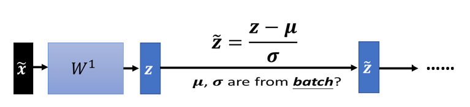
但是在做 Batch Normalization 的时候，一个 \(\tilde{x}\)，一个 normalization 过的 feature 进来，然后你有一个 z，你的 z 呢，要减掉 \(μ\) 跟除 \(\sigma\)，那这个 \(μ\) 跟 \(\sigma\)，是用一个 batch 的资料算出来的
但如果今天在 testing 的时候，根本就没有 batch，那我们要怎么算这个 \(μ\)，跟怎么算这个 \(\sigma\) 呢
所以真正的，这个实作上的解法是这个样子的，如果你看那个 PyTorch 的话呢，Batch Normalization 在 testing 的时候，你并不需要做什么特别的处理，PyTorch 帮你处理好了
在 training 的时候，如果你有在做 Batch Normalization 的话，在 training 的时候，你每一个 batch 计算出来的 \(μ\) 跟 \(\sigma\)，他都会拿出来算 moving average
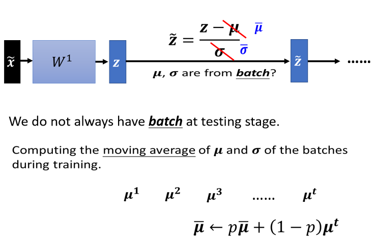
你每一次取一个 batch 出来的时候，你就会算一个 \(μ^1\)，取第二个 batch 出来的时候，你就算个 \(μ^2\)，一直到取第 t 个 batch 出来的时候，你就算一个 \(μ^t\)
接下来你会算一个 moving average，你会把你现在算出来的 \(μ\) 的一个平均值，叫做 \(μ\) bar，乘上某一个 factor，那这也是一个常数，这个这也是一个 constant，这也是一个那个 hyper parameter，也是需要调的那种啦
在 PyTorch 里面，我没记错 他就设 0.1，我记得他 P 就设 0.1，好，然后加上 1 减 P，乘上 \(μ^t\) ，然后来更新你的 \(μ\) 的平均值，然后最后在 testing 的时候，你就不用算 batch 里面的 \(μ\) 跟 \(\sigma\) 了
因为 testing 的时候，在真正 application 上，也没有 batch 这个东西，你就直接拿 \(\barμ\) 跟 \(\bar\sigma\) ，也就是 \(μ\) 跟 \(\sigma\) 在训练的时候，得到的 moving average，\(\barμ\) 跟 \(\bar\sigma\) ，来取代这边的 \(μ\) 跟 \(\sigma\)，这个就是 Batch Normalization，在 testing 的时候的运作方式
Comparison¶
好 那这个是从 Batch Normalization，原始的文件上面截出来的一个实验结果，那在原始的文件上还讲了很多其他的东西，举例来说，我们今天还没有讲的是，Batch Normalization 用在 CNN 上，要怎么用呢，那你自己去读一下原始的文献，里面会告诉你说，Batch Normalization 如果用在 CNN 上，应该要长什么样子
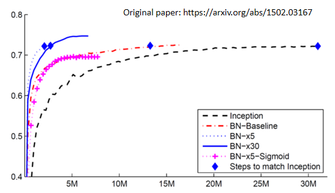
这个是原始文献上面截出来的一个数据
- 横轴呢，代表的是训练的过程，纵轴代表的是 validation set 上面的 accuracy
- 那这个黑色的虚线是没有做 Batch Normalization 的结果，它用的是 inception 的 network，就是某一种 network 架构啦，也是以 CNN 为基础的 network 架构
- 然后如果有做 Batch Normalization，你会得到红色的这一条虚线，那你会发现说，红色这一条虚线，它训练的速度，显然比黑色的虚线还要快很多，虽然最后收敛的结果啊，就你只要给它足够的训练的时间，可能都跑到差不多的 accuracy，但是红色这一条虚线，可以在比较短的时间内，就跑到一样的 accuracy，那这边这个蓝色的菱形，代表说这几个点的那个 accuracy 是一样的
- 粉红色的线是 sigmoid function，就 sigmoid function 一般的认知，我们虽然还没有讨论这件事啦，但一般都会选择 ReLu，而不是用 sigmoid function，因为 sigmoid function，它的 training 是比较困难的，但是这边想要强调的点是说，就算是 sigmoid 比较难搞的，加 Batch Normalization，还是 train 的起来，那这边没有 sigmoid，没有做 Batch Normalization 的结果，因为在这个实验上，作者有说，sigmoid 不加 Batch Normalization，根本连 train 都 train 不起来
- 蓝色的实线跟这个蓝色的虚线呢，是把 learning rate 设比较大一点，乘 5，就是 learning rate 变原来的 5 倍，然后乘 30，就是 learning rate 变原来的 30 倍，那因为如果你做 Batch Normalization 的话，那你的 error surface 呢，会比较平滑 比较容易训练，所以你可以把你的比较不崎岖，所以你就可以把你的 learning rate 呢，设大一点，那这边有个不好解释的奇怪的地方，就是不知道为什么，learning rate 设 30 倍的时候，是比 5 倍差啦，那作者也没有解释啦，你也知道做 deep learning 就是，有时候会产生这种怪怪的，不知道怎么解释的现象就是了，不过作者就是照实，把他做出来的实验结果，呈现在这个图上面
Internal Covariate Shift?¶
好 接下来的问题就是，Batch Normalization，它为什么会有帮助呢，在原始的 Batch Normalization，那篇 paper 里面，他提出来一个概念，叫做 internal covariate shift ， covariate shift (训练集和预测集样本分布不一致的问题就叫做“covariate shift”现象) 这个词汇是原来就有的，internal covariate shift，我认为是，Batch Normalization 的作者自己发明的
他认为说今天在 train network 的时候，会有以下这个问题，这个问题是这样
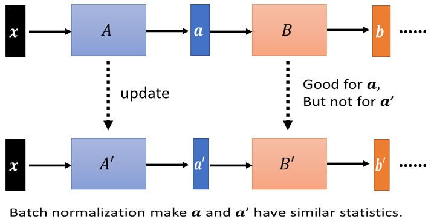
network 有很多层
-
x 通过第一层以后 得到 a
-
a 通过第二层以后 得到 b
- 计算出 gradient 以后，把 A update 成 A′，把 B 这一层的参数 update 成 B′
但是作者认为说，我们在计算 B，update 到 B′ 的 gradient 的时候，这个时候前一层的参数是 A 啊，或者是前一层的 output 是小 a 啊
那当前一层从 A 变成 A′ 的时候，它的 output 就从小 a 变成小 a′ 啊
但是我们计算这个 gradient 的时候，我们是根据这个 a 算出来的啊，所以这个 update 的方向，也许它适合用在 a 上，但不适合用在 a′ 上面
那如果说 Batch Normalization 的话，我们会让，因为我们每次都有做 normalization，我们就会让 a 跟 a′ 呢，它的分布比较接近，也许这样就会对训练呢，有帮助
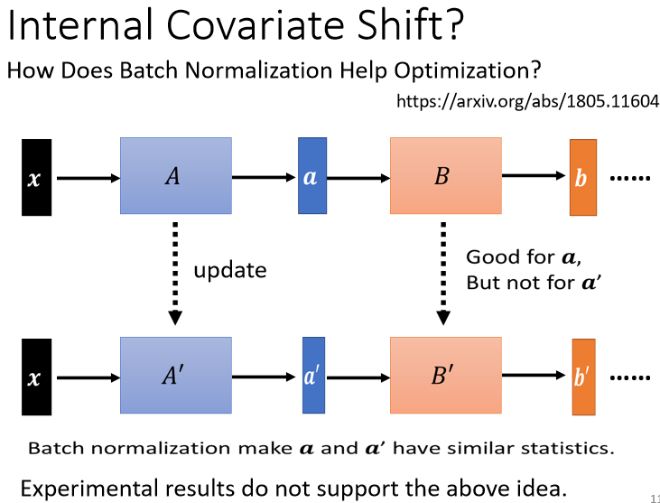
但是有一篇 paper 叫做，How Does Batch Normalization，Help Optimization，然后他就打脸了internal covariate shift 的这一个观点
在这篇 paper 里面，他从各式各样的面向来告诉你说，internal covariate shift，首先它不一定是 training network 的时候的一个问题，然后 Batch Normalization，它会比较好，可能不见得是因为，它解决了 internal covariate shift
那在这篇 paper 里面呢，他做了很多很多的实验，比如说他比较了训练的时候，这个 a 的分布的变化 发现，不管有没有做 Batch Normalization，它的变化都不大
然后他又说，就算是变化很大，对 training 也没有太大的伤害，然后他又说，不管你是根据 a 算出来的 gradient，还是根据 a′ 算出来的 gradient，方向居然都差不多
所以他告诉你说，internal covariate shift，可能不是 training network 的时候，最主要的问题，它可能也不是，Batch Normalization 会好的一个的关键，那有关更多的实验，你就自己参见这篇文章，
为什么 Batch Normalization 会比较好呢，那在这篇 How Does Batch Normalization，Help Optimization 这篇论文里面，他从实验上，也从理论上，至少支持了 Batch Normalization，可以改变 error surface，让 error surface 比较不崎岖这个观点
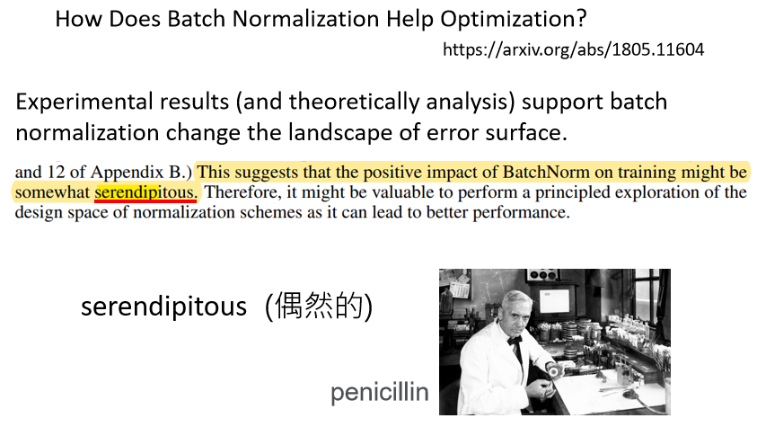
所以这个观点是有理论的支持，也有实验的佐证的，那在这篇文章里面呢，作者还讲了一个非常有趣的话，他说他觉得啊，这个 Batch Normalization 的 positive impact
因为他说，如果我们要让 network，这个 error surface 变得比较不崎岖，其实不见得要做 Batch Normalization，感觉有很多其他的方法，都可以让 error surface 变得不崎岖，那他就试了一些其他的方法，发现说，跟 Batch Normalization performance 也差不多，甚至还稍微好一点，所以他就讲了下面这句感叹
他觉得说，这个，positive impact of batchnorm on training，可能是 somewhat，serendipitous，什么是 serendipitous 呢，这个字眼可能可以翻译成偶然的，但偶然并没有完全表达这个词汇的意思，这个词汇的意思是说，你发现了一个什么意料之外的东西
举例来说，盘尼西林就是，意料之外的发现，大家知道盘尼西林的由来就是，有一个人叫做弗莱明，然后他本来想要那个，培养一些葡萄球菌，然后但是因为他实验没有做好，他的那个葡萄球菌被感染了，有一些霉菌掉到他的培养皿里面，然后发现那些培养皿，那些霉菌呢，会杀死葡萄球菌，所以他就发明了，发现了盘尼西林，所以这是一种偶然的发现
那这篇文章的作者也觉得，Batch Normalization 也像是盘尼西林一样，是一种偶然的发现，但无论如何，它是一个有用的方法
To learn more ……¶
那其实 Batch Normalization，不是唯一的 normalization，normalization 的方法有一把啦，那这边就是列了几个比较知名的，
Batch Renormalization https://arxiv.org/abs/1702.03275 Layer Normalization https://arxiv.org/abs/1607.06450 Instance Normalization https://arxiv.org/abs/1607.08022 Group Normalization https://arxiv.org/abs/1803.08494 Weight Normalization https://arxiv.org/abs/1602.07868 Spectrum Normalization https://arxiv.org/abs/1705.10941
本文总阅读量次